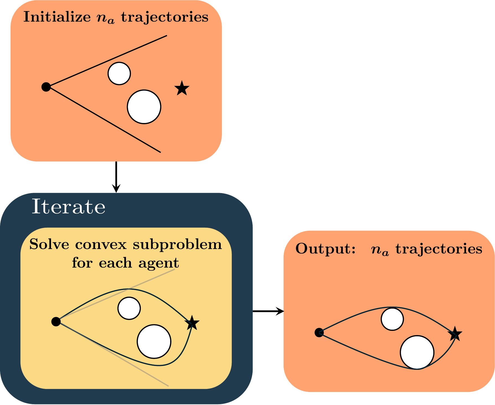
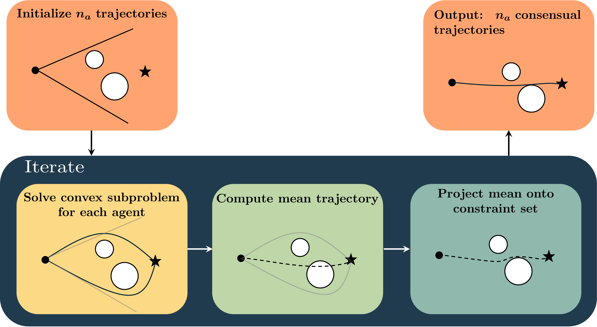

Consensus Sequential Convex Programming
Justin Ganiban, Natalia Pavlasek, Behçet Açıkmeşe
Abstract: Trajectory optimization methods provide an efficient and reliable means of computing feasible trajectories in nonconvex solution spaces. However, a well-known limitation of these algorithms is that they are inherently local in nature, and typically converge to a solution in the neighborhood of their initial guess. This paper presents a sequential operator-splitting framework, based on the alternating direction method of multipliers (ADMM), aimed at promoting exploration within the sequential convex programming (SCP) framework. In particular, diverse initial solutions are modeled as agents within the consensus ADMM framework. Driving these agents toward consensus facilitates exploration of the nonconvex optimization landscape. Numerical simulations demonstrate that the proposed method consistently yields equivalent or lower-cost solutions compared to the standard SCP approach, with the same or fewer agents.


Sequential convex programming (SCP) efficiently finds locally optimal trajectories, but its solution depends heavily on the initial guess. In this work, multiple agents with diverse initializations each run SCP, then are coupled through consensus ADMM so they share information and are pulled toward a common solution. That coupling encourages exploration of nonconvex landscapes and can escape local stationary points where standard SCP (or independent multi-start) stalls.
Consensus ADMM
Consensus ADMM splits an optimization problem across \(n_a\) agents with a shared global variable \(\bar{z}\). Starting from
$$ \min_{z}~\sum_{i} p_i(z)+q(z), $$
we introduce local copies \(z_i\) and rewrite the problem as
$$ \min_{z_1,\ldots,z_{n_a},\bar{z}}~\sum_{i=1}^{n_a}p_i(z_i)+q(\bar{z}) \quad\mathrm{s.t.}\quad z_i=\bar{z},\quad i\in[n_a]. $$
The ADMM iterates are
$$ \begin{aligned} z_i^{j+1} &=\operatorname*{arg\,min}_{z}\, p_i(z)+\frac{\rho}{2}\bigl\|z-\bar{z}^{j}+\xi_i^{j}\bigr\|_2^{2},\\ \bar{z}^{j+1} &=\operatorname*{arg\,min}_{\bar{z}}\, q(\bar{z})+\frac{\rho}{2}\sum_{i=1}^{n_a}\bigl\|z_i^{j+1}-\bar{z}+\xi_i^{j}\bigr\|_2^{2},\\ \xi_i^{j+1} &=\xi_i^{j}+\bigl(z_i^{j+1}-\bar{z}^{j+1}\bigr), \end{aligned} $$
where \(\xi_i\) are dual variables and \(\rho>0\) is the consensus penalty parameter. The primal and dual residuals \(\delta_{r_i}^{j+1}=z_i^{j+1}-\bar{z}^{j+1}\) and \(\delta_s^{j+1}=\rho(\bar{z}^{j+1}-\bar{z}^{j})\) measure agreement with consensus.
Sequential convex programming
Consider the discrete-time optimal control problem with stacked trajectory variables \(z_k=[x_k^\top~u_k^\top]^\top\) and \(z=z_{0:K}\):
$$ \begin{aligned} \min_{z}~& J_K(z_K)+\sum_{k=0}^{K-1}J_k(z_k)\\ \mathrm{s.t.}~& e^{x}z_{k+1}=f_k(z_k),\quad k\in[K-1],\\ &g(z_k)\le 0,\quad h(z_k)=0,\quad z_k\in\mathcal{Z}^c_k,\quad k\in[K]. \end{aligned} $$
SCP solves this by successive convexifications. At iterate \(j\), nonconvex terms are linearized about \(z^{j}\) and penalized, yielding
$$ \begin{aligned} \Theta(z^{j},z) &:= \tilde{J}_K(z_K^{j},z_K) +\sum_{k=0}^{K-1}\tilde{J}_k(z_k^{j},z_k) +\mathbf{1}_{\mathcal{Z}^{c}}(z)\\ &\quad +w^{1}\sum_{k=0}^{K-1}\bigl\|\tilde{f}_k(z_k^{j},z_k)\bigr\|_1 +w^{2}\mathbf{1}_{n_g}^{\top}\bigl|\tilde{g}(z^{j},z)\bigr| +w^{3}\bigl\|\tilde{h}(z^{j},z)\bigr\|_1, \end{aligned} $$
with a proximal trust-region term
$$ \Gamma(z^{j},z) := \Theta(z^{j},z) +\frac{w^{\mathrm{p}}}{2}\sum_{k=0}^{K}\bigl\|z_k-z_k^{j}\bigr\|_2^{2}. $$
Standard SCP then repeatedly solves the convex subproblem
$$ z^{j+1}=\operatorname*{arg\,min}_{z}~\Gamma(z^{j},z). $$
Operator-splitting SCP (OS-SCP)
OS-SCP embeds SCP into consensus ADMM. Each agent solves a convex subproblem whose proximal term pulls toward the current consensus (rather than only toward its own previous iterate):
$$ z_i^{j+1} =\operatorname*{arg\,min}_{z}~ \Theta(z_i^{j},z) +\frac{\rho}{2}\bigl\|z-\bar{z}^{j}+\xi_i^{j}\bigr\|_2^{2}, \qquad i\in[n_a], $$
or equivalently \(z_i^{j+1}=\operatorname*{arg\,min}_{z}\,\Gamma^{c}(z_i^{j},\bar{z}^{j},\xi_i^{j},z)\) with
$$ \Gamma^{c}(z_i^{j},\bar{z}^{j},\xi_i^{j},z) = \Theta(z_i^{j},z) +\frac{\rho}{2}\bigl\|z-\bar{z}^{j}+\xi_i^{j}\bigr\|_2^{2}. $$
The consensus update enforces feasibility of the shared trajectory with respect to the convexified constraint set \(\mathcal{Z}=\mathcal{Z}^{c}\cap\mathcal{Z}^{n}\), where \(\mathcal{Z}^{n}\) is obtained by linearizing dynamics and nonconvex constraints about the mean trajectory \(\hat{z}^{j}=\frac{1}{n_a}\sum_{i=1}^{n_a}z_i^{j}\). Taking \(q(\bar{z})=\mathbf{1}_{\mathcal{Z}}(\bar{z})\) gives
$$ \bar{z}^{j+1} =\operatorname*{arg\,min}_{\bar{z}}~ \mathbf{1}_{\mathcal{Z}}(\bar{z}) +\frac{\rho}{2}\sum_{i=1}^{n_a}\bigl\|z_i^{j+1}-\bar{z}+\xi_i^{j}\bigr\|_2^{2}, $$
which is the projection
$$ \bar{z}^{j+1} =\Pi_{\mathcal{Z}}\!\left(\frac{1}{n_a}\sum_{i=1}^{n_a}\bigl(z_i^{j+1}+\xi_i^{j}\bigr)\right), \qquad \Pi_{\mathcal{Z}}(v)=\operatorname*{arg\,min}_{\bar{z}\in\mathcal{Z}}\|\bar{z}-v\|_2^{2}. $$
The dual variables are then updated by
$$ \xi_i^{j+1}=\xi_i^{j}+\bigl(z_i^{j+1}-\bar{z}^{j+1}\bigr). $$
Main algorithm
Algorithm (OS-SCP). Given tolerances \(\epsilon_r,\epsilon_s,\epsilon_c>0\), iteration limit \(j^{\mathrm{max}}\), and initial trajectories \(z_i^{0}\) for \(i\in[n_a]\):
- Primal update (in parallel): for each agent \(i=1,\ldots,n_a\), \[ z_i^{j+1}\leftarrow\operatorname*{arg\,min}_{z}\,\Gamma^{c}(z_i^{j},\bar{z}^{j},\xi_i^{j},z). \]
- Consensus update: \[ \bar{z}^{j+1} \leftarrow \Pi_{\mathcal{Z}}\!\left(\frac{1}{n_a}\sum_{i=1}^{n_a}\bigl(z_i^{j+1}+\xi_i^{j}\bigr)\right). \]
- Dual update: for each agent \(i\), \[ \xi_i^{j+1}\leftarrow\xi_i^{j}+\bigl(z_i^{j+1}-\bar{z}^{j+1}\bigr). \]
- Increment \(j\) and repeat until the primal/dual residuals fall below \(\epsilon_r,\epsilon_s\), the consensus cost change is below \(\epsilon_c\), or \(j>j^{\mathrm{max}}\).
Diverse initializations attract agents to different regions of the nonconvex landscape; the consensus coupling then pulls them toward agreement and can free agents from local stationary points that trap independent multi-start SCP.